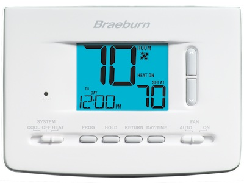
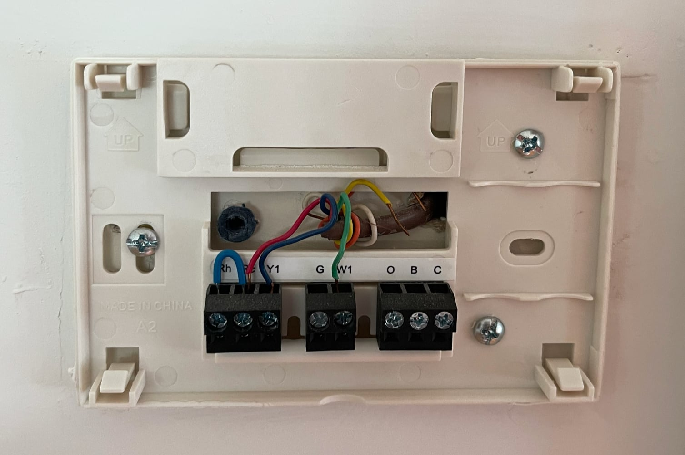
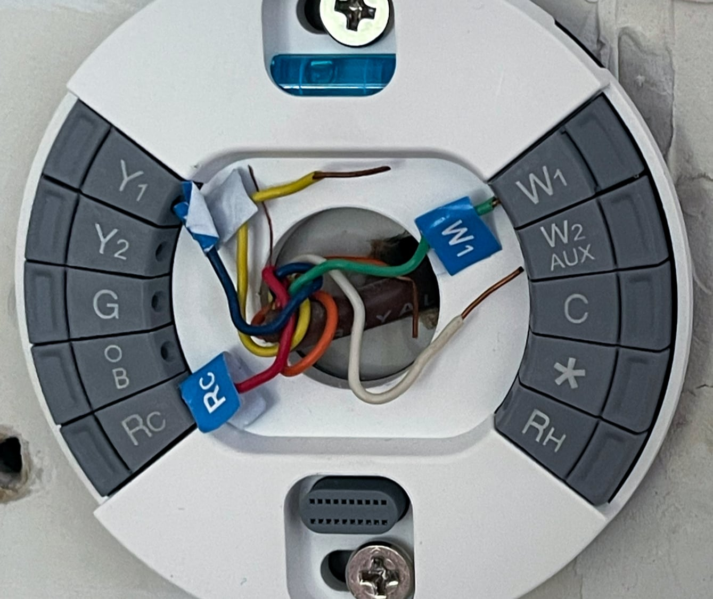
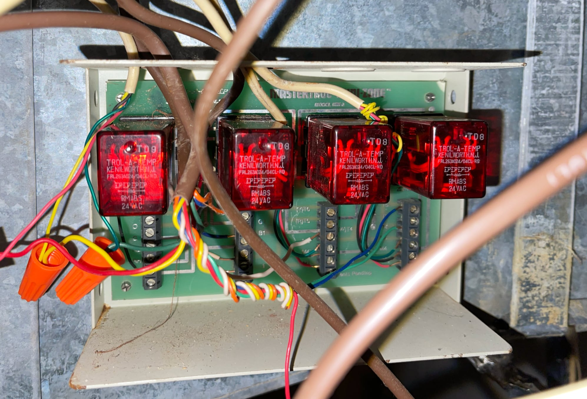
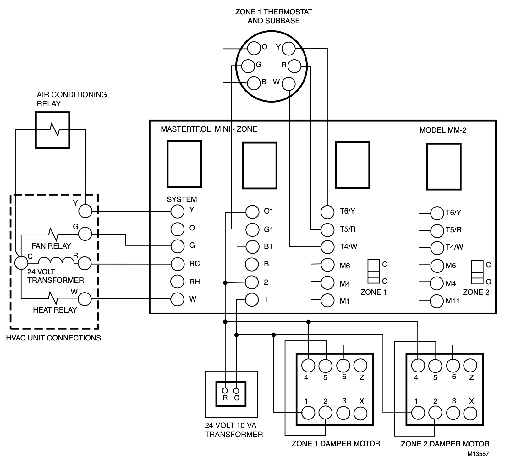
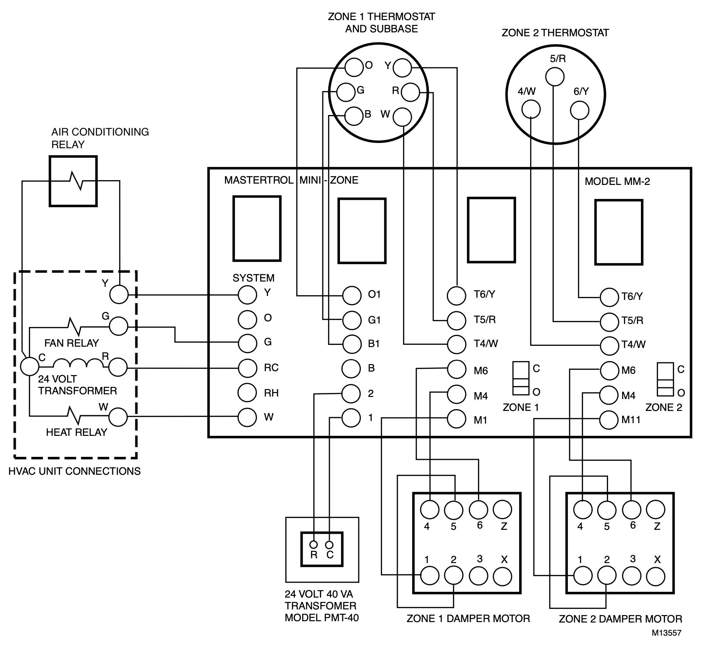
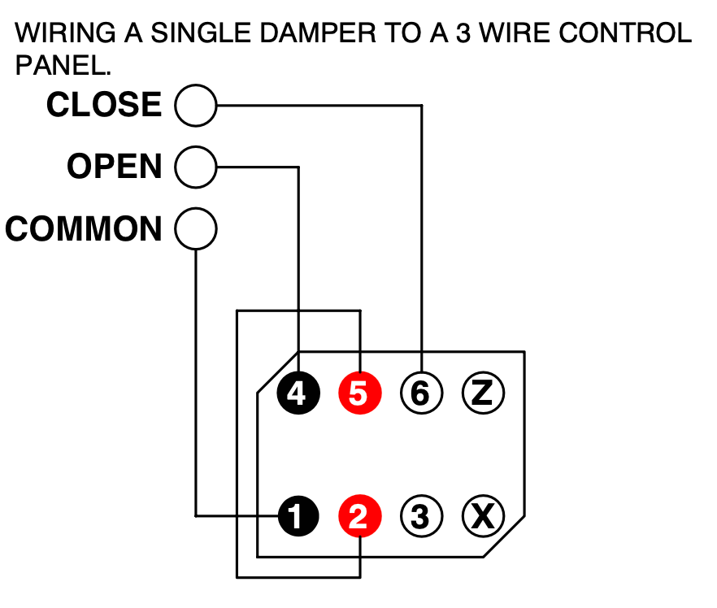
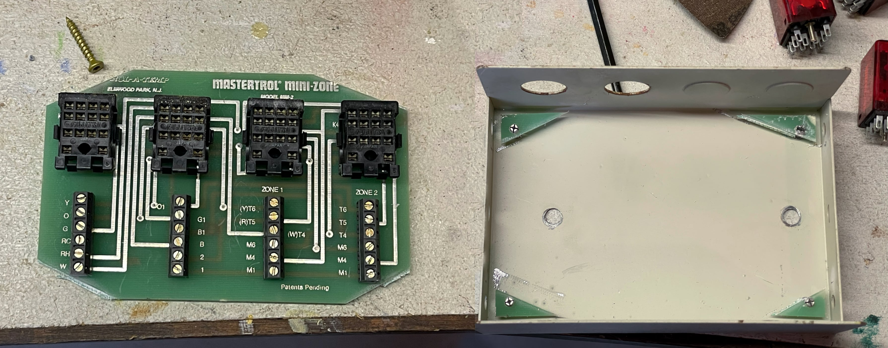
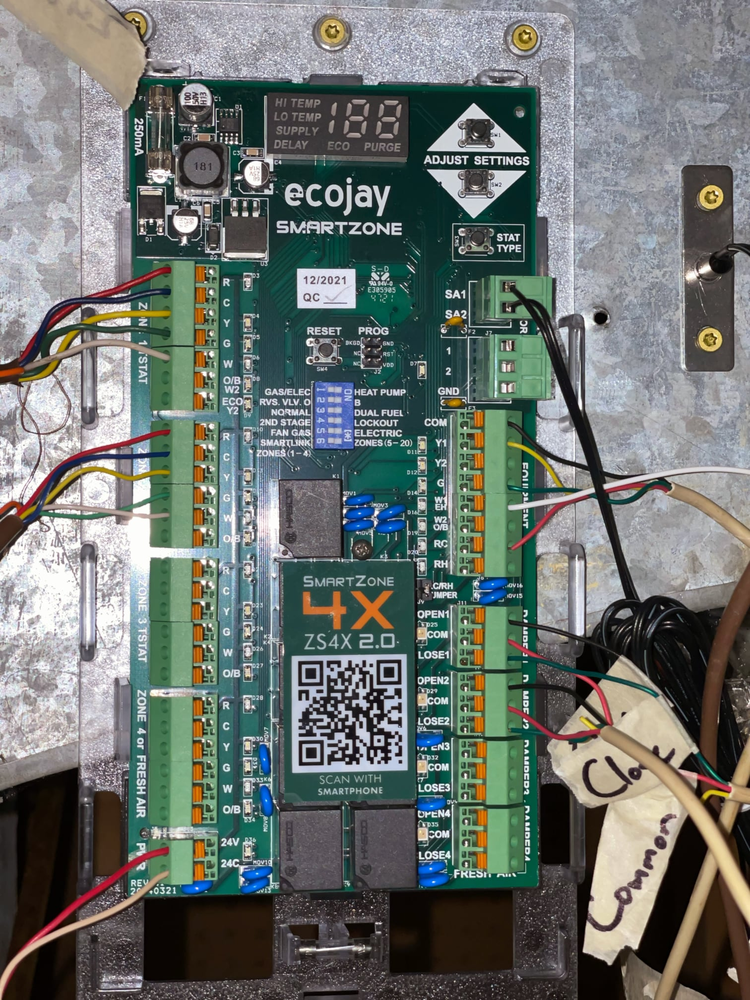
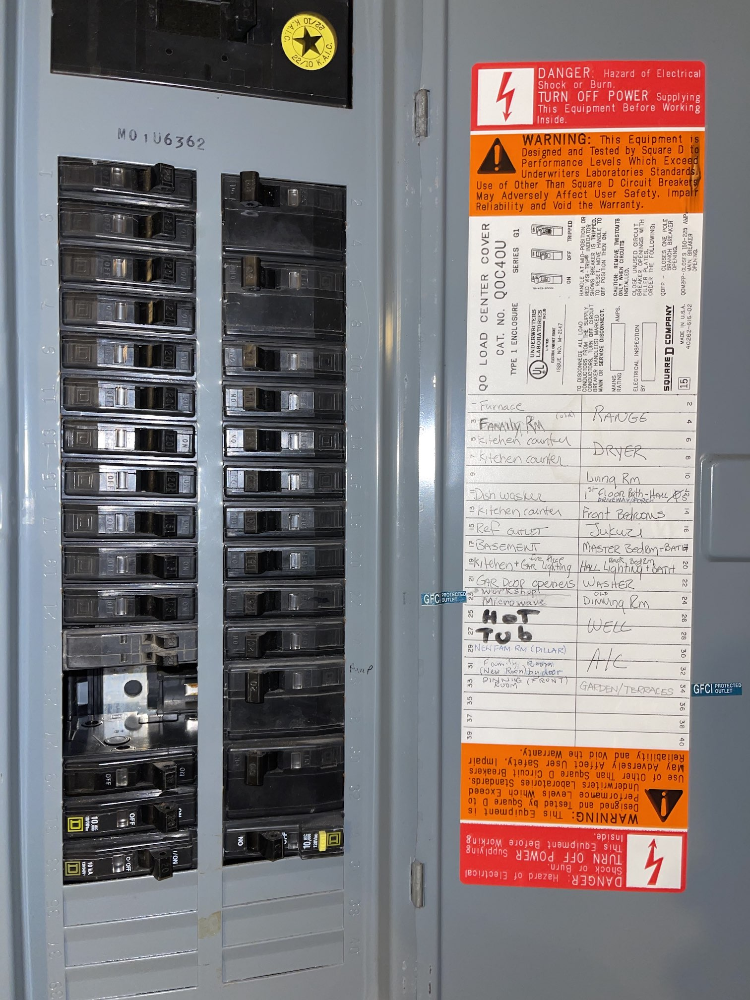

I had been thinking about upgrading the thermostats for a while, and I honestly thought it would be simple. I was very wrong: I ended up having to replace the zone controller and a power transformer as well, and it took me over a year to finish the job.
Long before buying the house, YouTube recommended me a particularly snarky video about how thermostats work:
To save you 20 minutes, here’s the relevant part at 0:28:
The typical American thermostat has just 4 wires going to it. A common 24 volt AC feed, a return wire for heat, another wire for cooling, and another wire for the fan. All the thermostat does is complete a circuit on one of those three control wires, and the heating and cooling system will respond accordingly.
Based on this alone, I was convinced that new thermostats would be a drop-in replacement.
Disclaimers
Yes, I know home improvement is a little off topic here – I originally wrote this for a different blog I am no longer involved with. I promise there’s interesting electronics-adjacent content.
There’s a lot of Amazon affiliate links here. While I appreciate your support, please shop local whenever you can. I know I did – it was extremely helpful being able to buy parts same-day.
HVAC work is high-voltage electrical work. This is dangerous: mistakes can be both costly and life-threatening. You should only attempt this if you understand and take responsibility for the risks involved.
Choosing a thermostat
First, some context. The house has forced-air heating and central air conditioning split into two zones, and came with basic programmable thermostats for each zone. I had a few goals for the replacement thermostats:
- Automatically turn off the system when we’re away, especially for long trips. Yes, I could just use the “off” switch on the thermostat, but I’d have to remember to use it on the way out. This would also truly turn off the system rather than putting it in a safety mode that keeps the pipes from freezing.
- Similarly, provide a way to remotely turn it back on when we’re traveling back so we’re not greeted by a freezing (or boiling) house.
- Place remote temperature sensors in the bedrooms. The second floor thermostat is located in a hallway and the vents are only in the bedrooms, so if the doors are closed the thermostat can’t effectively respond to temperature changes.
- Make it easier to schedule temperature changes to allow for better sleep.
- Future-proof the system for a later upgrade to heat pump heating.
- Replace the old thermostats (Braeburn 2020NC) with something better looking.

There’s a few different options for smart thermostats these days, and most of them tick all of the boxes. I went with the Nest Learning Thermostat simply because we were already pretty entrenched in the Google smart home ecosystem, but you might want to consider either the Ecobee Smart Thermostat Premium or Enhanced if you care about finer controls and Apple HomeKit support. Make sure to look out for discounts or rebates from your power utility as well.
Safety
Before you get started, remember that the wiring you’ll run into could be up to 240V on a 60A breaker, which can easily kill you if you’re not careful. Make sure you understand how to keep yourself safe while working with electrical connections. While I won’t go into too much detail here, the most important thing is to always turn off a circuit at the breaker box and test the wires you’re working on before touching them. You’ll need some tools to be 100% sure:
- Multimeter to test exposed wiring and to debug power supply issues. The exact one doesn’t matter too much as long as it can measure at least 0-300V AC.
- Non-contact voltage tester to test unexposed wiring or when it is hard to find a ground. This one can detect as low as 12V, which is suitable for the signals going to the thermostat.
- Circuit breaker finder if your breaker box or thermostat wires are not labeled. This one is a little pricey but unlike the cheaper options it works for both 120V and 240V circuits, and can even identify non-energized wires. This means it can trace the thermostat wires too.
False start
I first got started with the installation in October 2021. By then, the thermostats had already sitting on the shelf for four months. I started with the downstairs zone and naively followed the instructions included in the Nest app, which told me to reuse the wiring for the thermostat as-is. The previous homeowners seem to have chosen strange colors for the wires:

After wiring in the Nest, it looked like this:

Unfortunately, this didn’t work out. When I installed the thermostat on top of the base, it gave me the error “No power to Y1 wire detected.” After some research I assumed that there just was a maintenance issue with the A/C condenser and disconnected the Y1 wire to silence the error since we only needed heat at the time.
I completely forgot about the HVAC system for the next six months. By the time May rolled around, a few warm days reminded me that I needed to get the A/C working again. Fearing that it was actually an issue with the condenser unit I called a local HVAC company to take a look. They were able to manually turn on the A/C and figured the issue was that the zone controller was incompatible with Nests and recommended replacing either of those components. I had them re-install one of the old thermostats to get the A/C working again that day.

The following October, it was time to turn the heat on again. I flipped the physical switch on the old thermostat only to find that it wasn’t doing anything.
Planning
The quote the HVAC company gave for the parts alone for the new zone controller felt absurd to me. I couldn’t leave my family without heat, so I ordered the Ecojay SmartZone-4X for a fifth of the price and began the painstaking process of manually tracing all of the wiring between the zone controller, furnace, condenser, fan, thermostats, and dampers. I mostly did this by checking voltage levels between each of the wires, which luckily were distinct enough to figure out where each of them led. Maybe this would have been easier if I had just bitten the bullet and bought the circuit breaker finder I linked above.

Schematically, there’s two problems here, both of which were caused by the work done by the HVAC company when they “fixed” our air conditioning:
- The system was “switched” to cooling by connecting an actual wire from O1 to R rather than by correctly wiring O and B from the thermostat to the zone controller. This made it impossible to switch to heating by using the switch on the thermostat.
- The dampers were hardwired open.
For reference, this is how everything should have been wired according to the manual for the old zone controller (Mastertrol Mini-Zone):

The only parts that didn’t translate directly to the new zone controller were the dampers. After reading through the manual for the dampers we had (Trol-A-Temp/Zone-A-Trol MST), I determined that the zone controller should be treated as a 3 wire control panel for the purpose of wiring the dampers:

I also had to add a (fortunately very short) C wire between the furnace and the zone controller. The previous homeowners were kind and included enough wires between the zone controller and the thermostats for a C wire and even heat pump control (typically marked O/B). If you don’t have a C wire at your thermostat and don’t want to snake in a new one, you can use a C wire adapter compatible with your thermostat – I would have used the Nest Power Connector if the C wire was missing.
Installation
Now it was time to actually replace the zone controller. The screws attaching the zone controller to the duct work were inaccessible, so I ended up literally cutting up the PCB with an oscillating multi-tool to get to them. (I intentionally didn’t cut any traces just in case I needed it again for some reason.)

I then taped over the old holes from the old zone controller with aluminum foil tape (remember: duct tape is not designed for duct work) and mounted the new zone controller with some self-tapping outdoor metal screws.
I wired it in according to the wiring diagram in the zone controller manual, making sure to label everything and use the standard colors for the wires that lead to the thermostats. If you don’t have any connectors on hand, I recommend using Wago connectors.

I then went ahead and turned everything on at the breaker, only to find that nothing happened.
After some probing with the multimeter, I discovered that the transformer that was supposed to be powering the zone controller was only outputting 4V AC when it should have been outputting 24V. Confusingly, it was only rated for 10 VA when the manual for the old zone controller recommended a 40 VA transformer. I replaced it with a 24V 20 VA1 transformer marketed for doorbells (it’s what I could find locally), and everything came to life when I turned on the breaker this time.
Cleanup
While I was testing the system to make sure that both heating and cooling worked properly, I felt a noticeable draft from a few spots around the ducts. I taped the worst offenders and altogether this seems to have brought down the gas and electric bills considerably. A thermal camera may be useful to identify more subtle leaks.
The Nest software could use some work. I tried setting up the thermostat directly from the Google Home app. The app-based installation guide was nice but the app had trouble actually connecting to the thermostat. This was only resolved by switching to the Nest app to establish the connection. I figured that the integration of the two should have been more complete by now, especially seeing that Google acquired Nest more than 9 years ago in 2014.
Finally, before I go: we don’t live at this house anymore. If you do2, here’s some things to keep in mind:
- I did my best to seal the leaks I could find just by feeling around the ducts, but I didn’t actually point a thermal camera at them. There’s probably a few spots I missed.
- Don’t blindly feel around the ducts unless you want your fingers stuck in a mousetrap.
- I intentionally chose a zone controller with more zones than we needed at the time since we planned to finish the basement. This never ended up happening, but there’s two extra zones if you need them.
- The damper for the first floor zone is still stuck open. I suspect it’s just disconnected but its terminals are completely inaccessible – you’ll probably have to cut through some of the pegboard from the workshop to reach them. It’s also possible that the motor is burnt out.
- If you don’t want to do any of this work yourself, don’t call Nero Air Conditioning & Heating. They did tell me they were going to open the dampers but they didn’t tell me they were going to set the HVAC system to cooling by permanently hardwiring it.
- Slightly tangential: I intentionally turned off the breaker labeled “garden/terraces” because the GFCI is faulty.
And if you’re from the management where we’re living when this was posted: yes, I did read the lease, and no, I did not change the thermostat. I do wish you would let me though – the bedrooms get pretty chilly sometimes and I’m not looking forward to the electric bill with the A/C on.
-
See “Transformer Sizing” on page 2 of the SmartZone manual. ↩︎
-
The most surefire way I’m willing to reveal here is by the handwriting and (mis)spelling on the breaker box labels:  ↩︎